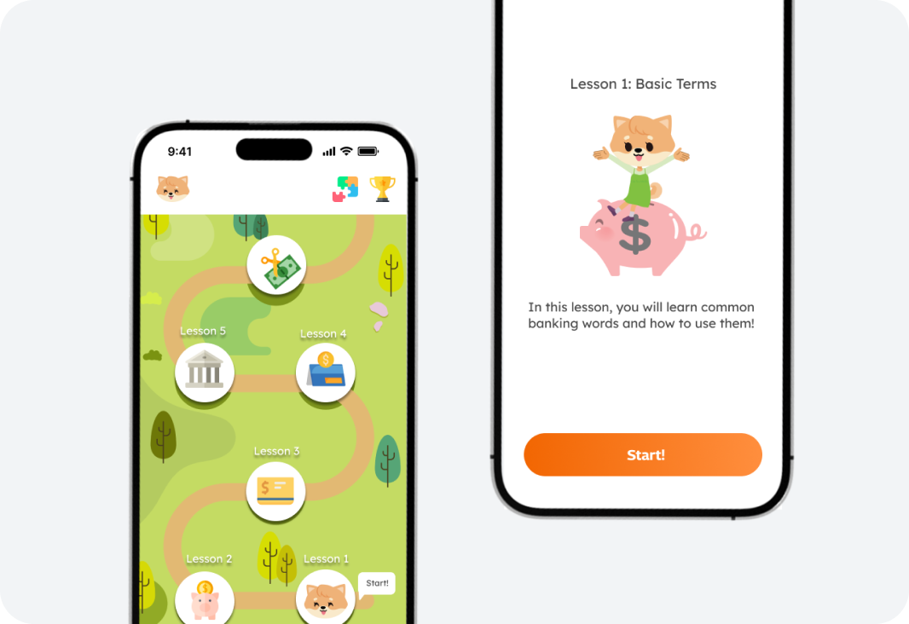

Designing a financial literacy app that helps kids learn money, investing, and banking
Impact
- Defined the product strategy for a kids-focused financial platform.
- Simplified complex financial concepts into learning experiences through structured lessons, tutorials, and interactive practice.
- Designed the core IA and onboarding flow.
- Created simulated budgeting and investing experiences in a safe environment to build real-world financial skills.
- Shaped a family-oriented product model that balanced child autonomy with parental visibility and guidance.
Overview
Financial literacy app for kids
Kinvest is an educational app which manages a debit card, credit card, stocks, and basic bank information for kids teaching them in a safe environment. Providing an easier way for families to navigate finances especially introducing stocks, money, credit and debit, and loans to kids to prepare them for the future.
This project was inspired by my little brother, watching him try to make sense of financial concepts made the gap in the market feel personal. Kids especially now are curious about money, but most tools are built for adults and school isn't really helping.
While 75% of U.S. students reported learning about budgets in school, only 22% reported learning about compound interest, 19% about credit card interest, and 13% about diversification ( OECD PISA 2022 ). There is a clear gap in this market.

Problem
Parents struggle to find tools that teach and apply financial literacy
Parents struggle to find accessible tools that combine educational value with practical application to teach financial literacy to their children from an early age.
Research
Understanding Alex and the competitive landscape
“Many young people lack the basic financial knowledge and skills to manage money, and without early intervention, these deficiencies can lead to costly mistakes in adulthood.” — Lusardi, A., & Mitchell, O. S. (2014). The Economic Importance of Financial Literacy: Theory and Evidence. Journal of Economic Literature
There’s a gap between what schools teach and what kids actually need to manage real-life spending, saving, and investing. Kinvest is here to close that gap, making money skills fun, visual, and trackable before bad habits form.
“Honestly, I’m not sure how to even explain building credit to my kid. No one ever taught me and I had to learn on my own when I moved to America, I don’t know where to start, but I do believe in starting early.” — Parent of a middle schooler
I started by defining a primary user persona, mapping empathy, analyzing competitors, and identifying the core pain points that made financial education feel out of reach for kids.
User Persona

Empathy Map

Competitive Analysis

Pain Points

Analysis
Turning research into product direction
Problem Statement
Alex is a middle school student who needs an accessible and effective method to learn financial literacy because he must prepare for his future and develop a comprehensive understanding of money management.
Product Goal Statement
Our app will let users learn essential financial literacy skills, including budgeting, saving, investing, and understanding credit and loans.
By allowing the ability to:
- Track financial goals
- Simulate investment scenarios
- Practice budgeting in a safe environment
We will measure effectiveness by assessing user engagement levels, improvements in knowledge through quizzes and assessments, expert guidance and support, lessons and tutorials, and positive learnings.
Research Analysis
Age appropriate, detailed, and concise financial education
Our app will emphasize structured learning modules that teach financial concepts (e.g., stocks, loans) in an age-appropriate and engaging manner, using interactive simulations and quizzes.
Accessibility and navigation
Prioritize a user-friendly interface with clear navigation and simplified explanations of financial concepts, making it easier for families, including children like Alex, to navigate and use effectively.
Parental Monitoring
Detailed progress reports, suggested activities for financial discussions, and customizable learning paths based on each child’s developmental stage and interests.
Learning Impact and Measurement
To ensure concepts are completely clear, short assessments, interactive elements, and practice tutorials will be engaged.
How might we leverage AI-driven personalization and interactive learning tools to make financial literacy engaging and accessible for families, empowering children like Alex to build lifelong skills for managing money responsibly and preparing for their future?
Information Architecture
Structuring the product around learning, banking, and practice
I mapped the app’s core areas — account, home, learn, pay, and trade — to balance education with practical money management and parental oversight.

Wireframing
Exploring flows and early mobile layouts
I wireframed key screens across onboarding, home, learn, pay, and trade, then mapped the onboarding user flow from sign-up through first lesson tutorials.


Solution
An easier way for families to navigate finances together
Providing an easier way for families to navigate finances by introducing stocks, money, credit and debit, and loans to kids to prepare them for the future. Kinvest will let users learn essential financial literacy skills, including budgeting, saving, investing, and understanding credit and loans.
By allowing the ability to:
- Track financial goals
- Simulate investment scenarios
- Practice budgeting in a safe environment
We will measure effectiveness by assessing user engagement levels, improvements in knowledge through quizzes and assessments, offering expert guidance and support, lessons and tutorials, and positive learnings.
Moving Forward
What comes next for Kinvest
Moving forward, my focus will be on:
- Expanding the Curriculum — Breaking down more advanced financial concepts (like interest, credit, and investing) into bite-sized breakdowns.
- Usability Testing — Conducting regular user testing with both kids and parents to understand what works, what confuses users, and how learning actually happens through the app.
- Iterating the Design — Refining the interface and interactions based on what makes learning more intuitive, fun, and self-directed.
Ultimately, Kinvest isn’t just about making money “fun” — it’s about giving kids real tools for life. By continuing to test, refine, and build, we can help close the financial literacy gap early.
More details available on request. Contact me to learn more.